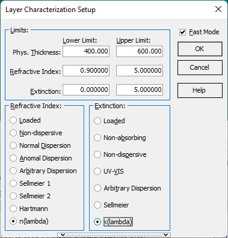

Layer Characterization
The entry fields in the Layer Characterization Setup window allow the user to specify lower and upper limits for the film parameters (thickness, refractive index, and extinction coefficient) to be determined and to specify a layer model for the characterization procedure.

Film parameters are kept within the specified limits during the characterization procedure. The data fields for each parameter limit are set to default values which may be changed by keying in new limits when the field is selected (active).
The choice of proper lower and upper limits is of particular importance for layer thickness. All characterization procedures are sensitive to this parameter. When layer thickness limits are too broad or too narrow, the convergence of the layer characterization procedure may be poor.
In order to improve the convergence in the case of broad thickness limits, OptiChar uses a special numerical procedure involving a number of tests with various thickness ranges. The number of tests is specified in the Options section of the Characterization submenu. The default number of tests is 10, which is appropriate for most cases.
The Layer Characterization Setup - Model Selection and Measurement Correction
The lower section of the Layer Characterization Setup window allows you to select models for the layer’s refractive index and extinction coefficient. You can choose models by marking the corresponding field. The available models include:
Non-dispersive
Normal dispersion
Non-absorbing
These models reflect the physical characteristics pertinent to your specific analysis. Moreover, there are n(λ) and k(λ) models, which assume a smooth, arbitrary dependence of the refractive index and extinction coefficient on wavelength. These models involve multiple parameters and are particularly useful for more complex scenarios where simpler models fall short.
Additionally, there is an option to specify Measurement Correction. This is useful if there is evidence of drift or scale issues within the measurement data. If selected, data points will be adjusted during the Layer Characterization process to minimize discrepancies, ensuring more accurate results.
Once the characterization constraints are set and a layer model is specified, the characterization procedure may be initiated by pressing the OK button.
There is the checkbox Fast Mode in the right upper part of the window. When this checkbox is marked, the program determines layer parameters using a special algorithm that narrows the examined parametric domain.
If the results of the fast mode characterization don’t look reasonable, it is better to clear the mark in this checkbox. In this case, a more detailed search in the allowed parametric domain will be performed.